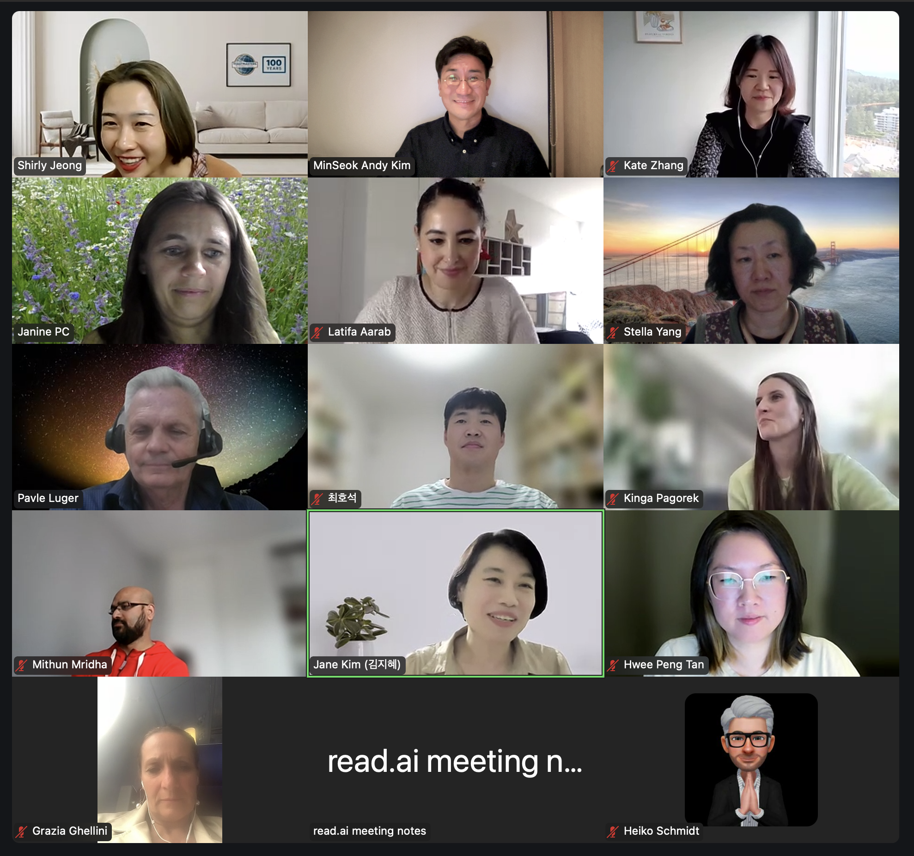

17th Cultural Talk For Diversity
Theme: Education

Event Details
Date: 24 May, 2025
Time: 23:00 (KST) / 14:00 (GMT) / 16:00 (CET) / 10:00 (EDT) / 07:00 (PDT)
This event has already taken place and is now part of our archive.
Conference Overview
This session explored education through cross-cultural experience, looking at how learning systems reflect national values while also shaping identity, belonging, and opportunity. By comparing French education and transnational learning journeys, the event invited participants to think about how education can be both culturally rooted and globally transformative.
Latifa Aarab
Intercultural Expert & Leadership Coach
Latifa Aarab is an intercultural expert and leadership coach who helps senior executives in global organizations lead multicultural teams with clarity, impact, and inclusion. Drawing on 17 years in global asset management, she supports leaders through research-based and practical intercultural development.
Topic: The French School of Thought
This talk explored the story of French education from its revolutionary roots to its modern reforms. It highlighted how critical thinking, structured debate, and intellectual rigor remain central to the French system, while questions of equality, innovation, and global competitiveness continue to shape its future.
Kate Zhang
International education professional
Kate Zhang is a trilingual professional who grew up in China, studied linguistics in South Korea, and later completed a Master of Education in Canada. Her experiences across multiple countries have shaped her passion for international education, belonging, and cross-cultural connection.
Topic: From Curiosity to Connection: A Journey Through Culture, Change, and Learning
Kate reflected on studying and living in Korea and Canada, sharing how cultural adaptation, new learning environments, and changing ideas of home shaped her understanding of education. Her talk connected personal growth with broader questions of how learning happens across cultures.